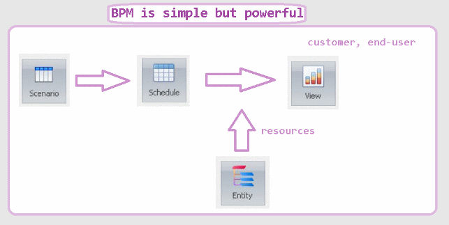

BPM is a progressive way of software development
BPM enables the understanding, automation, and optimization of business processes.
BPM makes sw again soft. You can now change business with just words. It's faster, easier and cheaper than other aspects of your business.
Priority: Create efficient workflows to accomplish core objectives.
With a BPM you not only manage, but you directly define, quantify and optimize your busines.
_Bonus :_š You can directly monitor and cotrol your business without added effort.
You save programmers, because computers understand BPM directly.
Top management and managers undertand (instead of IT) the concept of process:
Vision à Strategy à Business Process may contain several:
Sub-process may contain several:
Activity may contain several:
Task may contain several:
Step
Vision refers to understanding why the organization exists, customers vs stakeholders, balance between meeting the needs and demands of all these. Define your goals.
Structure: businesses are complex, The ‘something’ is usually a profit, through serving customers.
With bpm you can easily change processes without programmers and DEVOPS.
Focus on the concept, that is on the scenario – this is a way from current chaos via complexity to simplicity through understanding - that is a way with help of bpm
Vision is „WHY“ , bpm is „WHO WHAT WHEN“ and IT is „HOW“. That's the magic that bpm greatly relieves even big projects.
Again and again: define problem first! Solution is a second thing.
What is the solution when the problem formulation is miserable...
Keep in mind: Management better understands the whole,
IT better understands detail.
It's not an IT fault, that's an IT feature.
The BPM „bridge“ is comprehensible to everyone, including computers
Find out decision makers & influencers
Use DSL - keep audience understanding
Again and again: focus on business needs not software! – obvious IT fault….,
not become obsessed with perfection – obvious IT fault,
first prototype, then functional prototype, last main logic…
You can improve, not only automate… but be carefull with „Additional features keep sneaking into what your BPM project is trying to achieve“
Management knows and understands that business processes go across a company.
But this thing is strange for IT.
IT loves simple pure hierarchy, not collaboration, cooperation, orchestration, choreography...
With BPM, you have this issue settled to the satisfaction of everyone.

You can imagine BPM as a comfortable use case diagram from UML ;-)